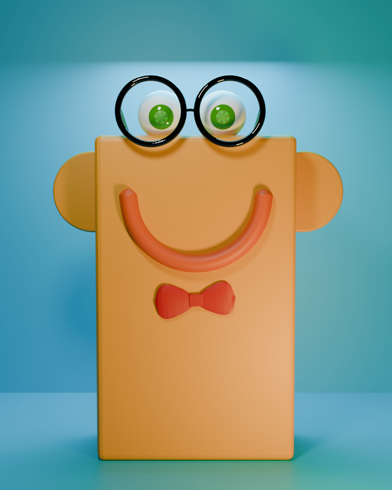
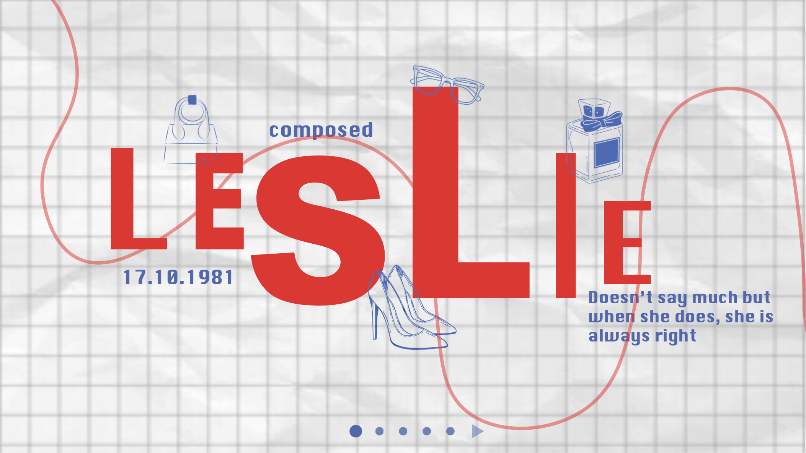
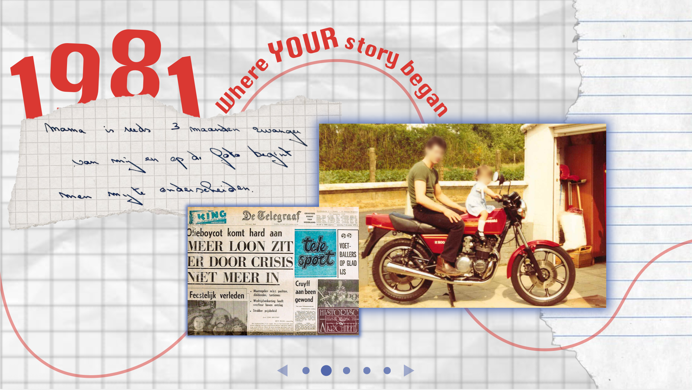
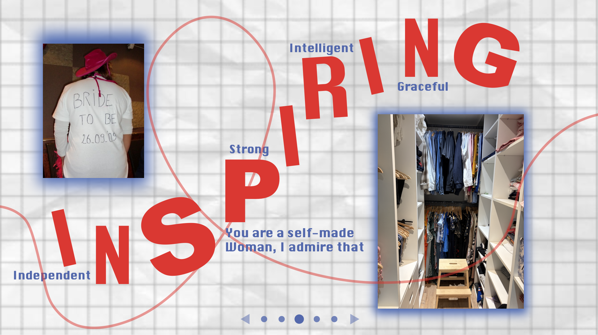
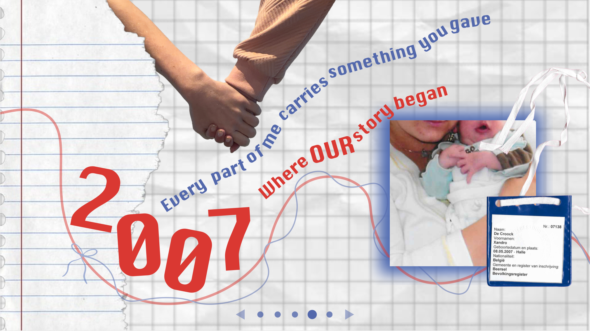
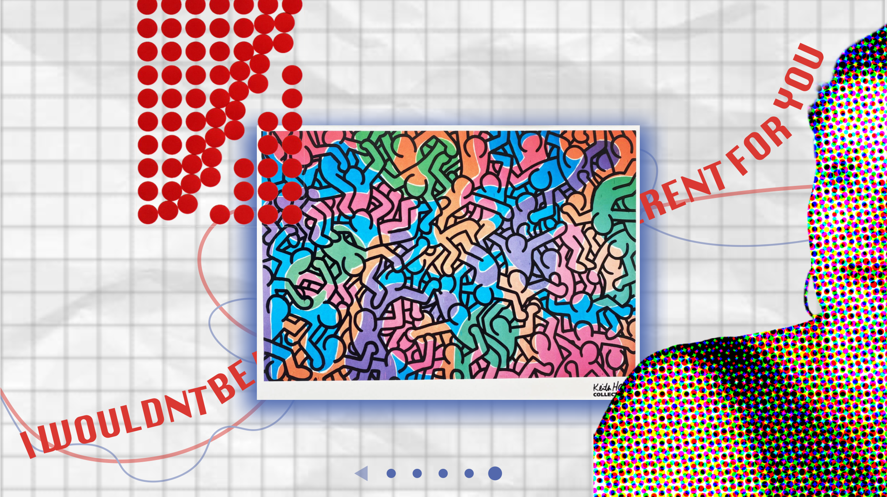

Ervaringen
Tijdens mijn opleiding Multimedia & Creatieve Technologie heb ik aan verschillende projecten gewerkt waarin ik mijn creatieve en technische vaardigheden heb kunnen ontwikkelen. Hieronder staan enkele projecten die mijn ervaring het best weergeven.
3D Basic Shapes project
In dit project heb ik met 3D basic shapes eenvoudige mannetjes ontworpen. Ik leerde hoe ik vormen kan combineren en structureren om tot een herkenbaar geheel te komen. Dit was mijn eerste kennismaking met 3D design en hielp mij om ruimtelijk te leren denken.

Full Projects – Afvalprobleem Brussel
Voor dit project heb ik samen met een team gewerkt aan een creatieve oplossing voor het afvalprobleem in Brussel. We deden onderzoek naar het probleem en ontwikkelden een concept dat inspeelt op het gedrag van mensen. Ik was betrokken bij het uitwerken van ideeën, het visuele ontwerp en de presentatie van het project.

Visual Design – Creatief portret
In dit project heb ik een creatief portret ontworpen met behulp van Photoshop. Ik heb geëxperimenteerd met compositie, kleuren en beeldbewerking om tot een visueel sterk resultaat te komen. Dit project heeft mijn creatieve en visuele vaardigheden verder ontwikkeld.




